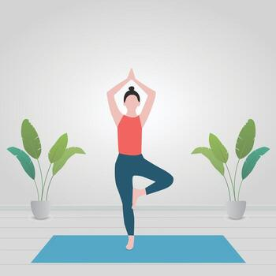
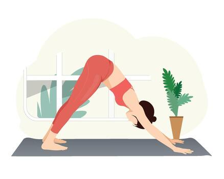
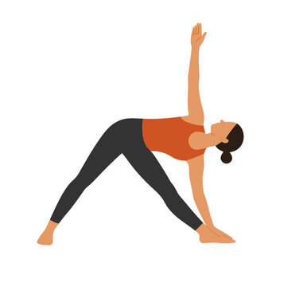
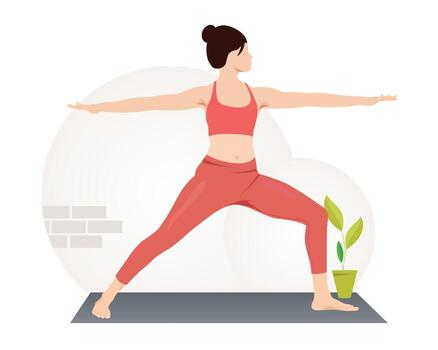

Easy Seat Pose (Sukhasana) is a foundational, cross-legged seated yoga posture used for meditation, breathwork (pranayama), and mindfulness. Despite its name suggesting ease, it requires flexibility in the hips, groin, and hamstrings, and proper alignment to be comfortable and effective.
BENEFITS :- Improves posture, Increases flexibility, Reduces stress and anxiety, Balances energy flow
Tree Pose (Vrksasana) is a foundational standing balance pose in yoga that symbolizes the strength, stability, and groundedness of a tree. Rooted in ancient Hatha Yoga traditions and mentioned in the 17th-century Gheranda Samhita, this pose enhances balance, strengthens the legs, core, and ankles, and improves posture and focus. It is often one of the first balancing poses taught to beginners due to its accessibility and holistic benefits.
BENEFITS :- Improves balance & stability, Strengthens key muscle group, Promotes postural alignment, Enhances focus.
Downward Dog Pose (Adho Mukha Svanasana) is a foundational, inverted yoga asana that forms an inverted "V" shape, often called the "quintessential yoga pose" due to its widespread recognition and benefits. It is commonly used in flowing sequences like Sun Salutation (Surya Namaskar), Vinyasa, and Ashtanga yoga, serving as both a transition and a resting pose.
BENEFITS :- Promotes full body stretch & strength Improves circulation, Improves spinal health, Weight bearing strength.
Triangle Pose (Trikonasana) is a foundational standing yoga posture that combines strength, balance, and flexibility. Named for the triangle shape formed by the body, it stretches the hamstrings, hips, spine, and shoulders while building core stability and improving alignment.
BENEFITS :- Supports digestive health, Relieves pain & ailment, Boosts mental well-being, Aids in weight management.
Warrior Pose (Virabhadrasana) is a foundational and powerful series of standing yoga poses named after the mythical warrior Virabhadra, created by Lord Shiva in Hindu mythology. It embodies strength, focus, and grounded energy, making it a staple in modern yoga practices like Hatha, Vinyasa, and Power Yoga.
BENEFITS :- Strengthens & stabilizes lower body, Improves posture, Improves hip flexibility & mobility, Enhances pelvic alignment.